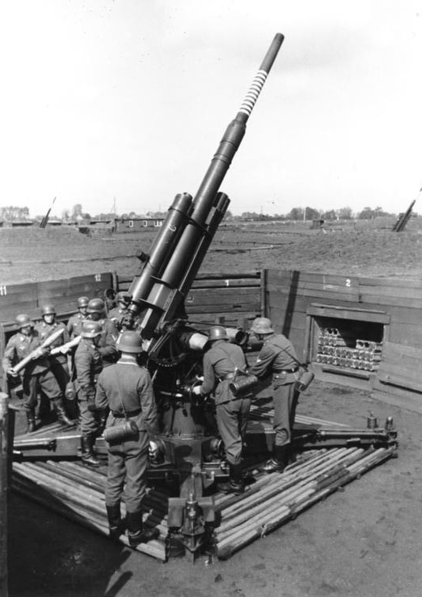

Todo sobre
Artillería
Desde los primeros cañones de bronce del siglo XIV hasta los sistemas autopropulsados modernos, una historia de metal, pólvora e ingeniería.
Este sitio recorre la historia de la artillería combinando análisis técnico,
contexto histórico y relatos de hechos reales, desde los primeros cañones
hasta los sistemas contemporáneos.